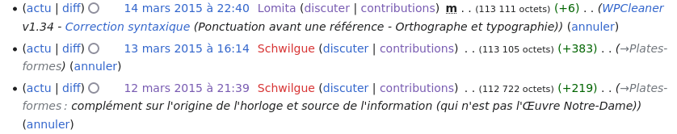
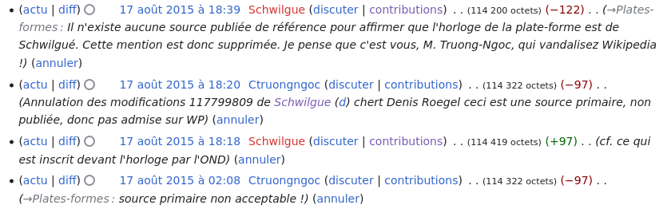

Sur l'incident avec Claude Truong-Ngoc
Le 30 août 2023, Runi Gerardsen m'a accusé
de m'en être pris à un autre contributeur
(Claude Truong-Ngoc).
Suite à cette accusation, j'ai apporté des précisions
sur la page de discussion à laquelle Runi Gerardsen fait référence (j'ai supprimé la section initiale, car elle ne correspondait pas à la réalité, mais on peut toujours la retrouver dans les archives). Je résume la situation ici :
- Le 12 mars 2015, j'ai ajouté la mention « (horloge construite par Jean-Baptiste Schwilgué vers 1843-1844, et modifiée par Ungerer avant son installation en 1924. (note : D'après des recherches non publiées de Denis Roegel, archives Schwilgué et Ungerer.)) » après la mention de l'horloge
se trouvant sur la plate-forme de la cathédrale de Strasbourg
(version du 12 mars ici).
Madame Lomita qui est passée sur la page immédiatement après moi n'a
apparemment pas été gênée par mon intervention :

- Le 17 août 2015, après de nombreuses autres modifications intermédiaires
par d'autres contributeurs, Claude Truong-Ngoc décide de supprimer le passage
« D'après des recherches non publiées de Denis Roegel, archives Schwilgué et Ungerer. ».

- Je veux bien croire que ce n'est pas une source publiée, mais c'est
tout de même vrai. Ce sont les recherches que j'ai faites il y a près
de 20 ans qui ont permis d'établir que l'horloge qui se trouve
actuellement sur la plate-forme de la cathédrale (tiens, quelqu'un pourrait
créer une page pour cette horloge, il n'y en a pas, et moi je n'ai plus
envie de perdre mon temps avec cela) remontait en grande partie
aux années 1840 et non 1920, comme tout le monde le pensait
depuis un siècle. Par ailleurs, le fait que l'horloge remonte au 19e siècle
avait été mentionné en 2014 dans un article des Dernières Nouvelles
d'Alsace, justement sur la base de mes travaux. Et en 2016, comme indiqué
plus haut, j'ai publié un article sur cette horloge dans le
Bulletin des amis de la cathédrale de Strasbourg.
- Maintenant, suite à la suppression de la source de l'origine
de l'horloge, j'ai remis la mention, parce que mon nom figurait
à cette époque devant l'horloge, ce qui était une forme de publication.
Ceci a néanmoins à nouveau été supprimé par Claude Truong-Ngoc qui cette
fois-ci commence à faire le rapprochement avec mon vrai nom.
Mais en même temps, M. Claude Truong-Ngoc a laissé subsister
« (horloge construite par Jean-Baptiste Schwilgué vers 1843-1844, et modifiée par Ungerer avant son installation en 1924) », information
pour laquelle il n'y avait plus de source. En d'autres termes, la source
non acceptable a été supprimée, mais l'information non sourcée a été laissée.
Tout cela n'a gêné aucun administrateur.
- Pour des raisons de cohérence, j'ai alors supprimé l'information
non sourcée, et c'est l'état de la page jusqu'à aujourd'hui. Ou plutôt,
cela le serait si la mention de l'horloge de la plate-forme
n'avait pas été supprimée par la suite. Il est intéressant de voir que celui
qui a supprimé cette mention, le 30 mai 2021 à 12h03, n'est
autre que Runi Gerardsen.
- En tous cas, par ailleurs, j'ai eu quelques échanges par mail
avec Claude Truong-Ngoc qui passe son temps à parsemer diverses
pages de photographies en noir et blanc dont je commence à me lasser
et qui n'ont, en fait, comme but, que de l'autopromotion. M. Claude Truong-Ngoc
semble notamment être pratiquement le photographe officieux du diocèse
de Strasbourg, et cette absence de neutralité est ce que j'ai critiqué
dans des échanges privés.
- Suite à cela, M. Claude Truong-Ngoc a commencé à m'accuser de spammer
et de vandaliser Wikipédia. Vandaliser Wikipédia ! parce que j'avais
ajouté une unique source. D'ailleurs, j'étais plus ou moins forcé
d'ajouter cette source, parce que dans l'article des DNA de 2014,
l'Œuvre Notre-Dame, sans mon accord, a utilisé
certains de mes résultats de recherche.
- Runi Gerardsen, en pointant vers cet incident avec Claude Truong-Ngoc, omet de
noter que cet utilisateur est bloqué depuis le 20 février 2021.
D'ailleurs, il a été
bloqué à plusieurs reprises, comme on peut le voir dans le
journal de blocage
et il avait déjà été bloqué pour insulte avant mes quelques échanges avec lui.
Je pense donc qu'il y a quelque incongruité à renvoyer vers mes échanges
avec Claude Truong-Ngoc qui est problématique.